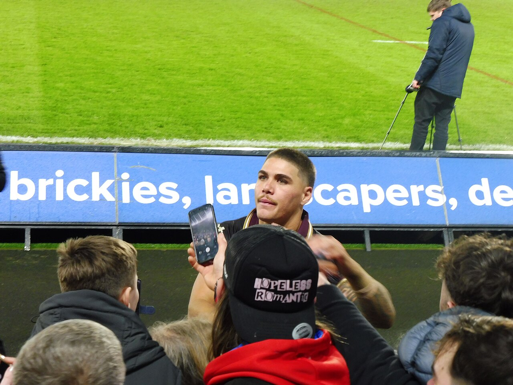
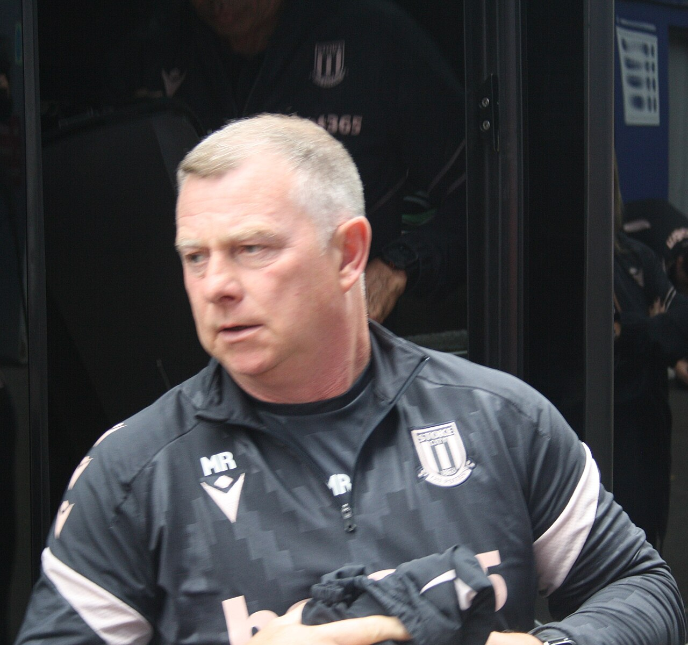

Brisbane Broncos
NRL 2026 · Men finished 14th · NRLW runners-up · 2027 opens at the Roosters on 4 March
Photo: Hullian111 / Wikimedia Commons source · Creative Commons Attribution-ShareAlike 4.0 International (CC BY-SA 4.0) · Resized; no crop.

Latest results with Broncos in them — two World Cup finals, both won
World Cup final · Sun 15 Nov · Suncorp Stadium · 24–6 at half-time · Crowd 52,461
Women's World Cup final · Sun 15 Nov · Suncorp Stadium · 34–6 at half-time
NRLW finals 2026 — a season that ended one game short
The grand final on 4 October went to the Roosters, 30–6 in front of 47,451 at Accor Stadium, completing a 13–0 season. Jesse Southwell scored Brisbane's try, Tarryn Aiken won the Karyn Murphy Medal, and it was Ali Brigginshaw's last game for the club. The full write-up is kept in index-v17.html.
The men's last six of 2026 — the historical record
The Suncorp ledger — the whole men's season in one table
| Split | P | W | L | Win % |
|---|---|---|---|---|
| Home fixtures (all at Suncorp) | 12 | 2 | 10 | 16.7 |
| Away fixtures | 12 | 6 | 6 | 50.0 |
| … of which, played at Suncorp | 2 | 0 | 2 | 0.0 |
| Total appearances at Suncorp | 14 | 2 | 12 | 14.3 |
Carried forward from the previous edition’s match-by-match review, because two true numbers were in circulation and looked contradictory. AAP's review coverage said Brisbane lost 12 of 14 at Suncorp; this page runs 2–10 at home. Both are right: Brisbane played two further games at Suncorp that were not home fixtures — the Warriors in Magic Round (Round 11) and the Dolphins in Round 23, which was Redcliffe's home game. They lost both. The club's own season review put it the same way as AAP — “lost 12 of 14 at Suncorp” — and made home form one of five stated priorities for 2027.
2026 by the numbers
The tile that belongs at the top of this list and has never been on this page: Brisbane went into 2026 as the reigning premiers. Michael Maguire won the 2025 title — only the second coach in the club's history to do it — and the following season the same club finished 14th and conceded 28.2 points a game. Every number above reads differently once that is in front of them.
Final 2026 ladder
| # | Team | Pts | +/− |
|---|---|---|---|
| 1 | Panthers · out, prelim | 42 | +336 |
| 2 | Warriors · out, semi-final | 42 | +310 |
| 3 | Dolphins · out, prelim | 40 | +156 |
| 4 | Roosters · PREMIERS | 38 | +118 |
| 5 | Sharks · out, semi-final | 34 | +149 |
| 6 | Rabbitohs | 34 | +113 |
| 7 | Knights · runners-up | 34 | +42 |
| 8 | Cowboys | 32 | −84 |
| · · · finals cut-off · · · | |||
| 9 | Sea Eagles | 28 | +99 |
| 10 | Storm | 28 | +18 |
| 11 | Raiders | 28 | −45 |
| 12 | Bulldogs | 28 | −60 |
| 13 | Eels | 24 | −181 |
| 14 | Broncos | 22 | −206 |
| 15 | Wests Tigers | 22 | −254 |
| 16 | Titans | 18 | −186 |
| 17 | Dragons | 16 | −325 |
Final ladder carried forward from the previous edition. Brisbane’s 14th place, 8–16 record and 471–677 points tally were checked against Rugby League Project; the other clubs’ full figures have not been independently re-audited in this review.
NRLW 2026 — how the ladder finished
| # | Team | W–L | Pts |
|---|---|---|---|
| 1 | Roosters · PREMIERS | 11–0 | 22 |
| 2 | Titans · out, prelim | 10–1 | 20 |
| 3 | Broncos · runners-up | 8–3 | 16 |
| 4 | Wests Tigers · out, week 1 | 7–4 | 14 |
| 5 | Raiders · out, prelim | 6–5 | 12 |
| 6 | Knights · out, week 1 | 5–6 | 10 |
Top six only, from the NRL's own ladder (corrected in v15). Brisbane lost three in a row up to a 28–20 defeat by the Titans in round 8, then won their last three and both finals before the grand final; the one regular-season meeting with the Roosters was round 7, lost 34–20.
Worth knowing
- The 2027 draw, in brief. Released on 20 November. Twelve NRL home games at Suncorp, and eight games there in the first 11 rounds, counting the Dolphins' Battle of Brisbane and the Magic Round opener against Penrith. Byes in rounds 9, 15 and 18. South Sydney, Payne Haas's new club, visit Suncorp on Thursday 6 May. The new Perth Bears are away at HBF Park on Saturday 17 July. No NRL trips to Las Vegas, Newcastle or Wollongong (club).
- The NRLW draw. The women open against Cronulla at midday on Sunday 4 July at Totally Workwear Stadium, and play five home games: three at Suncorp, two at Totally Workwear. Three Suncorp double-headers pair the two sides: Warriors on 10 July, then 25 July and 21 August, the last of them Indigenous Round and a Battle of Brisbane (club).
- Karapani's two games. His NRL suspension for a drink-driving offence covers the first two rounds: the Roosters away and Wests Tigers at home.
- Willison: three weeks into the window, still no news. No announcement as at this snapshot. NRL.com's signings tracker, updated 19 November, still has him and Blake Mozer contracted to the end of 2027, and Jordan Riki to 2028, although the club said in September that Riki is off contract at the end of 2027 (see the panel below).
- Five world champions. Walsh, Staggs and Carrigan won the World Cup with the Kangaroos, and Upton and Southwell with the Jillaroos; Willison and Mato were runners-up with New Zealand.
A window still open, what 2027 requires, and the draw in numbers
Round 1: Roosters away, Thu 4 MarMen's 2026 · 14th · 8–16Willison: unsigned, 22 days into his windowStep 1 — the free-agency window is open. The rule, and who it now applies to:
A note on Riki's contract. The club's head of football, Troy Thomson, said in September: "Jordan is off contract at the end of 2027… He can't talk to anyone until November 1" (News Corp, via Zero Tackle). NRL.com's signings tracker (22 October) and Zero Tackle's 1 November contract guide both list him as signed for 2028. The club's own statement is the most direct source, so this page keeps 2027 — but if the lists are right, his window does not open until 1 November 2027.
Step 2 — what 2027 actually requires. An illustrative comparison using the 2026 structure, not a confirmed 2027 schedule. The NRL pays two competition points a win plus two for each of three byes, so a season converts cleanly:
The shape has not changed and it still cuts both ways. Going from the worst home record in the competition to a merely ordinary one only reaches the edge of the eight on this year's numbers — that is how far 2026 fell. But it is five wins, not fifteen, and the away half already happened: 6–6 on the road is a mid-table team, managed with an injured fullback, a retiring halfback and a defensive brief that changed hands in July. Keeping the two forwards on the November clock is the cheapest five-wins-worth of improvement available — and the club has now spent on a head of performance as well.
Step 3 — the 2027 draw in numbers (club figures; times from NRL.com's draw).
The honest summary. The draw is kind early: eight of the first 11 rounds at Suncorp, where Brisbane won two of their 12 home games this year. That is an opportunity or a warning, depending on what has been fixed since. The opener is against the premiers, away, without Karapani. Off the field, Willison is 22 days into the window that lets rival clubs talk to him, and the extension the club says it wants has still not been announced.
Ins and outs — Broncos
Six listed arrivals for 2027, unchanged this week. NRL.com's signings tracker, updated 19 November, lists five of them as 2027 gains (Pezet, Barnett, Gagai, Blore, De Courcey); Penisini is on a development contract, announced by the club on 19 October. Contract lengths other than those were not re-verified this edition. Destinations are not assumed when unannounced.
↘ Joining for 2027
- Mitch Barnett Confirmed
Back-rower from the Warriors, contracted through 2029. The headline forward recruit to replace Haas's minutes, if not his impact. Missed selection for Australia's World Cup squad. - Jonah Pezet Confirmed
Halfback from Parramatta through 2029 — the Reynolds succession plan, and likely to be coached by Reynolds himself. First training session in Broncos kit in the second week of pre-season. - Shawn Blore Confirmed
Back-rower from Melbourne, contracted through 2028. - Dane Gagai Confirmed
Centre from Newcastle, one year, through 2027. Played in the Knights' 19–18 grand-final loss; cleared by the IRL on 3 October to switch to New Zealand, and named in their World Cup squad. - Wilson De Courcey Confirmed
Centre, 21, from Newcastle on a two-year Top 30 deal to 2028, announced by the club on 19 October. Two NRL games for the Knights this year and 18 tries in 20 NSW Cup games — corrected this edition from the club's announcement. - Richard Penisini Confirmed — new
Outside back, 21, from Parramatta on a development contract for 2027. Knee injuries interrupted his 2024 and 2026 seasons; the club says he is back to full fitness.
↗ Leaving
- Adam Reynolds Confirmed — retired
323 NRL games, no final and no farewell match in 2026. Joins the coaching staff in 2027, role still being defined. - Payne Haas Confirmed
To South Sydney for 2027–2029: a three-year contract, AAP reported, at a reported $3.6m. NRL.com's signings tracker lists only 2027 and 2028. Finger surgery; not in Samoa's World Cup squad. - Jaiyden Hunt Confirmed — new
To Canberra, two years, reported $350,000. Announced 14 September. - Jack Gosiewski Leaving — reported may stay
Listed as leaving after his contract was not renewed. Code Sports reports (via Zero Tackle, 27 October) that St Helens are keen and the Broncos are open to another year; nothing announced. - Corey Jensen Confirmed — retired
Retiring rather than moving on. - Jesse Arthars, Gehamat Shibasaki, Grant Anderson, Joshua Coric Confirmed
Arthars to Catalans Dragons, Shibasaki to the Perth Bears, Anderson to the Warriors, Coric to Hull FC on a two-year deal. - Delouise Hoeter Confirmed — retired
Farewelled as a retiring player at the club awards on 14 September. - Josh Rogers, Ben Te Kura Confirmed — departing
Both acknowledged as departing in the club’s awards announcement. NRL.com's signings tracker lists Te Kura as “released / NFL”; Rogers' destination is not verified.
Xavier Willison, Jordan Riki and Blake Mozer are on neither list. Willison and Mozer are contracted for 2027 and, since 1 November, may talk to rival clubs; Riki is contracted for 2027 according to the club and 2028 according to two contract lists (see the maths panel). Willison was reported on 13 October to have verbally agreed an extension, to be signed after 1 November, and on 18 October to be testing the market; he has said publicly he wants to stay. Riki is expected to test a market where comparable second-rowers are getting $850,000 to over $1m, and the Warriors are the club linked. Mozer has permission to talk to rivals, according to News Corp; the club says it is happy to honour his contract, and he is on its list of players back at pre-season training (9 November). None of this is resolved, and nothing here is a signing.
NRLW, for 2027: Martha Mataele Confirmed, a Tongan international outside back, 27, joins from Parramatta on a two-year deal announced by the club on 15 October. She won two caps for the Black Ferns in rugby union before switching codes, and in October she captained Tonga to a Test win over the Cook Islands.
Coaching and football staff for 2027, since it is movement even if it is not players: Peter O'Sullivan in as general manager of recruitment from Newcastle (confirmed 14 October); Jon Clarke in as head of performance from Manly; Matt Ballin confirmed as defensive coach after taking the brief in July; Ben Te'o out, to Queensland; Trent Barrett stays on attack; Adam Brideson stays in development with a new hire to support him; Troy Thomson up to executive general manager of football; Dave Pallard up to general manager; Adam Reynolds joining the staff in a role still being defined.
Stoke City
EFL Championship · P16 W10 D2 L4 · 2nd, 32 points
Photo: Timmy96 / Wikimedia Commons source · Public domain: Creative Commons CC0 1.0 Universal dedication · Resized; no crop.
.jpg){kind=link}
Latest result — third beats first, with ten men, and Stoke go second
Won 1–0 · Sat 21 Nov · bet365 Stadium · Championship MD16 · 0–0 at half-time · Crowd 26,913
Last six competitive games
Season so far — competitive
| Date | Opponent | Comp | Result | Crowd |
|---|---|---|---|---|
| 8 Aug | Oldham Athletic (H) | Carabao R1 | W 2–0 | 10,157 |
| 15 Aug | Swansea City (H) | Championship | L 1–2 | 24,332 |
| 22 Aug | Southampton (A) | Championship | L 1–3 | 29,185 |
| 25 Aug | Hull City (H) | Carabao R2 | D 1–1, lost 4–5 pens | 7,141 |
| 29 Aug | Wolves (A) | Championship | L 1–4 | 30,334 |
| 1 Sep | Norwich City (H) | Championship | W 1–0 | 20,140 |
| 5 Sep | Charlton Athletic (H) | Championship | W 4–0 | 21,071 |
| 8 Sep | Cardiff City (A) | Championship | D 1–1 | 18,088 |
| 12 Sep | Watford (A) | Championship | W 2–1 | 18,296 |
| 19 Sep | Sheffield United (H) | Championship | W 2–1 | 23,360 |
| 10 Oct | Bolton Wanderers (A) | Championship | W 2–1 | 26,018 |
| 13 Oct | Middlesbrough (H) | Championship | L 2–3 | 22,538 |
| 17 Oct | Derby County (A) | Championship | W 1–0 | 28,814 |
| 24 Oct | Bristol City (H) | Championship | D 0–0 | 22,390 |
| 31 Oct | Preston North End (H) | Championship | W 2–0 | 21,772 |
| 3 Nov | Blackburn Rovers (A) | Championship | W 2–1 | 13,825 |
| 7 Nov | Portsmouth (A) | Championship | W 2–1 | 20,306 |
| 21 Nov | Birmingham City (H) | Championship | W 1–0 | 26,913 |
Twenty-eight scored and nineteen conceded across eighteen competitive games. Stoke's eight home league crowds average 22,815; the eight away grounds visited average 23,108. The Birmingham crowd is from BBC Sport's match page and Wikipedia's season page, which agree; earlier lines were checked in previous editions.
Championship — after sixteen games
| # | Team | P | GD | Pts |
|---|---|---|---|---|
| 1 | Middlesbrough | 16 | +13 | 32 |
| 2 | Stoke City | 16 | +7 | 32 |
| Automatic promotion: 1st–2nd | ||||
| 3 | Wolves | 16 | +9 | 31 |
| 4 | Birmingham City | 16 | +13 | 29 |
| 5 | West Bromwich Albion | 16 | +8 | 29 |
| 6 | Southampton (−4) | 16 | +16 | 27 |
| 7 | QPR | 16 | +7 | 27 |
| 8 | Swansea City | 16 | +4 | 27 |
| Play-offs: 3rd–8th | ||||
| 9 | Sheffield United | 16 | +6 | 25 |
| 10 | West Ham United | 16 | +14 | 24 |
| 11 | Norwich City | 16 | +9 | 24 |
| 12 | Portsmouth | 16 | +2 | 23 |
| 13 | Blackburn Rovers | 16 | −1 | 22 |
| 14 | Wrexham | 16 | −1 | 21 |
| 15 | Cardiff City | 16 | −1 | 18 |
| 16 | Millwall | 16 | −5 | 18 |
| 17 | Bolton Wanderers | 16 | −9 | 18 |
| 18 | Bristol City | 16 | −10 | 18 |
| 19 | Charlton Athletic | 16 | −11 | 17 |
| 20 | Lincoln City | 16 | −12 | 15 |
| 21 | Watford | 16 | −14 | 15 |
| Relegation: 22nd–24th | ||||
| 22 | Burnley | 16 | −9 | 11 |
| 23 | Derby County | 16 | −18 | 10 |
| 24 | Preston North End | 16 | −17 | 9 |
Rebuilt this week from last week's table plus the 12 matchday-16 results (BBC Sport), then reconciled against BBC Sport's table as updated on 22 November: every row and every position matches. Stoke are 2nd, in the automatic places, level on 32 points with Middlesbrough but six goals worse off (+7, against +13), and a point clear of Wolves in 3rd. No two clubs are level on points and goal difference this week. Every club has played 16, and Southampton's four-point deduction still applies.
Next five fixtures
| Date (UK, GMT) | AEST | Opponent | H/A |
|---|---|---|---|
| Wed 25 Nov, 8:00pm | Thu 26 Nov, 6:00am | Millwall (16th) | Home |
| Sat 28 Nov, 3:00pm | Sun 29 Nov, 1:00am | West Ham United (10th) | Away |
| Sat 5 Dec, 3:00pm | Sun 6 Dec, 1:00am | Queens Park Rangers (7th) | Home |
| Wed 9 Dec, 7:45pm | Thu 10 Dec, 5:45am | Lincoln City (20th) | Away |
| Sat 12 Dec, 12:30pm | Sat 12 Dec, 10:30pm | West Bromwich Albion (5th) | Home |
All five match BBC Sport's fixture lists, checked 23 November (Brisbane time). Positions are as at 23 November. Millwall was moved to 8:00pm for Sky Sports (Wikipedia's season page). Conversions were computed with a time-zone database: the UK is on GMT until the end of March, so every kick-off is ten hours behind Brisbane — Saturday 3pm games are 1am Sunday here, and the midweek evening games are breakfast.
Worth knowing
- Second, and level at the top. Stoke and Middlesbrough both have 32 points; Middlesbrough's goal difference is six better, which is all that keeps Stoke off the top. Wolves are a point behind in 3rd, and Birmingham dropped to 4th. Worked in the panel below.
- One defeat in thirteen. Since the three opening defeats Stoke are W10 D2 L1, and the defeat was at home to Middlesbrough (BBC Sport). That includes four straight wins and five straight away wins.
- Bombino banned for Millwall. His red card carries a one-match ban, served on Wednesday (BBC Sport). Galbraith's absence against Birmingham is unexplained in the reports this page has seen.
- Bocat back; Cissé still out. Éric Bocat returned off the bench against Birmingham. Lamine Cissé was again not in the matchday squad, and this page has found no official timescale.
- The Southampton swing is three places. A 2–0 win over Derby gives them 31 points on the pitch, which would put them 3rd; with the four-point deduction they are 6th. Worked in the panel below.
Squad shape
- Viktor Johansson — captain, sixteen league games from sixteen, and the late save from Stansfield.
- Ben Wilmot — sixteen starts from sixteen; his first-half header was saved from point-blank range (BBC Sport).
- George Hirst — the winner, his second league goal of the season: six starts and nine appearances off the bench (Wikipedia).
- Jack McGlynn — five league goals, the most in the squad; he played deeper against Birmingham in Galbraith's absence (Sky Sports).
- Luca Bombino — started the move for the goal, then was sent off. Out for Millwall.
- Bae Jun-ho, Éric Bocat and Sam Gallagher — Bae started; Bocat came on for the last 22 minutes and Gallagher for the last eight.
- The absent — Galbraith (reason not given), Cissé (injured, no timescale found), and Ben Pearson, not in the matchday squad; Pearson, in his final contract year, has two league appearances, both as a substitute, and is the January watch item. Aaron Cresswell and Ato Ampah have no appearances this season (Wikipedia).
Sixteen games in — second, level on points with the leaders
The Championship changed for 2026/27: 3rd–8th qualify for the play-offs. Third and fourth advance to the semi-finals; fifth hosts eighth and sixth hosts seventh in eliminators. The top two still go up automatically. EFL format announcement.
Step 1 — rebuild Stoke's row from the sixteen league results rather than copying the published table.
Thirteen games, 32 points, one defeat — and, as Robins said, two points a game across the whole season, the three opening defeats included.
These are planning benchmarks only. Neither 74 nor 50 is a guaranteed threshold.
Step 2 — Southampton's deduction, recomputed on the new table.
Three clubs sit between Southampton's raw 31 points and their published 27: Wolves on 31, and Birmingham and West Brom on 29. Without the deduction they would be third, a point off the top.
The honest version. Second place, two points a game and one defeat in thirteen: on any reading this is a promotion challenge. It is also a tight one. Stoke are level with Middlesbrough, a point ahead of Wolves and three ahead of Birmingham and West Brom, with 30 games to go. Next come Millwall at home on Wednesday without Bombino, and West Ham away on Saturday.
Ins and outs — Stoke City, window closed
Window summary carried forward; no movement since the window closed. In v15, Bae Jun-ho moved from the departures to the “stayed” list because he never left. Eleven names are listed below, including a loan and Milan Smit’s loan-to-permanent arrangement; that is not the same as eleven new summer arrivals. Wikipedia’s season page puts the net summer outlay at over £30m and lists two fees this page had as undisclosed: Bombino at £3.7m and Soumaré at £3.4m. Both are added below as reported rather than confirmed, from a single source. Other fees and contract terms have not been re-verified this week.
↘ Arrivals & permanent conversions
- Justin Devenny Confirmed
Midfielder, Crystal Palace, reported £5m, four-year deal, 1–2 September. Two goals v Charlton. - Jack McGlynn Confirmed
Midfielder, Houston Dynamo, permanent, reported around $5.5m. USMNT international. Scored at Watford and against Sheffield United. - Luca Bombino Confirmed
Left-back, San Diego FC, permanent with a sell-on clause, announced 1 September. Fee reported at £3.7m by one source; the club did not disclose it. - George Hirst Confirmed
Striker, permanent from Ipswich Town, reported around £6m. First league goal on 5 September. - Ethan Galbraith Confirmed
Midfielder from Swansea City, reported £10m — the summer's biggest outlay. Three league goals. - Milan Smit, Djibril Soumaré, Luke Graham, Josh Griffiths, Svante Ingelsson Confirmed
Smit £4.75–4.8m from Go Ahead Eagles (since loaned to Darmstadt 98); Soumaré from Braga, reported £3.4m; Graham from Dundee, reported £2m though officially undisclosed, four-year deal — now a Scotland squad member; Griffiths from West Brom; Ingelsson from Sheffield Wednesday, reported £1m. - Ben Johnson Confirmed — loan
Right-back, season-long loan from Ipswich Town. Scored at Cardiff.
↗ Left
- Sorba Thomas Confirmed
To Hull City, 1 September, after a third bid. Fee undisclosed officially; one outlet reports £10.5m. - Tatsuki Seko Confirmed
Permanent exit to Urawa Red Diamonds, announced by the club on 16 August. - Steven N'Zonzi, Lewis Baker, Nikola Jojić Confirmed
N'Zonzi released — one source has him since joining USL Dunkerque; Baker to Bursaspor on a free; Jojić departed by mutual consent. - Milan Smit (loan), True Grant, Emre Tezgel, Favour Fawunmi Confirmed — loans out
Smit to Darmstadt 98; Grant to Halifax, Tezgel to Wycombe, Fawunmi to Oldham. - Ben Pearson, Maksym Talovierov, Éric Bocat Stayed
All three linked with exits; none moved. Bocat has two league goals; Pearson, in his final contract year, is the January watch item. - Bae Jun-ho Stayed — corrected
Listed on this page from 31 August to 5 October as a permanent move to Olympique Lyonnais. That move did not happen: he is still Stoke's number 10, and was on the bench at Bolton.
Harry Clarke remains off this list. The £3.5m Ipswich deal reported in early August never happened — he signed permanently for Preston North End and has played for them. Ben Brereton Díaz, who chose Sheffield United over a Stoke loan, likewise stays off. Both are noted rather than silently deleted, because a transfer list that only shows the things that came off is not a transfer list. The window closed at 11pm BST on Tuesday 1 September — not 31 August, which earlier editions of this page got wrong and which is not coming back. The next window opens in January; until then the only movement available is contract business, and the only live item is Ben Pearson’s final year.